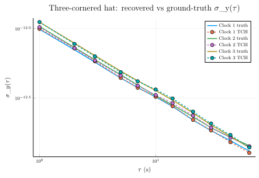

Three-cornered hat: separating individual clock noises from pairwise comparisons
When you compare a clock against a reference, the measured Allan deviation is the combined noise of both clocks added in quadrature. Without an absolutely-perfect reference, the noise of the clock-under-test is irrecoverable from a single comparison.
The three-cornered-hat (TCH) trick. Given three clocks and three pairwise difference records, you can solve a linear system for each clock's individual noise variance — provided the three clock noises are statistically independent. This is the standard noise-separation technique used in time-and-frequency labs to compare several standards of similar class from their pairwise comparisons alone.
This tutorial:
- Synthesises three independent free-running clocks of comparable precision using
_gen_powerlaw_phase. - Builds the three pairwise difference records.
- Computes ADEV on each pair.
- Solves the TCH linear system to recover each clock's individual σ_y(τ).
- Compares the recovered σ to the synthesised "ground truth".
1. Background — the linear system
Let x_i(t) be the phase of clock i against an inaccessible reference, and assume the three records are statistically independent. The pairwise difference records x_{ij} = x_i − x_j are observable. Their Allan variances obey
\[\sigma^2_{ij}(\tau) = \sigma^2_i(\tau) + \sigma^2_j(\tau)\]
(the variance of an independent sum). The three pairwise variances yield three equations in three unknowns:
\[\begin{aligned} \sigma^2_1 &= \tfrac{1}{2}\bigl(\sigma^2_{12} + \sigma^2_{13} - \sigma^2_{23}\bigr) \\ \sigma^2_2 &= \tfrac{1}{2}\bigl(\sigma^2_{12} + \sigma^2_{23} - \sigma^2_{13}\bigr) \\ \sigma^2_3 &= \tfrac{1}{2}\bigl(\sigma^2_{13} + \sigma^2_{23} - \sigma^2_{12}\bigr) \end{aligned}\]
The signs guarantee positivity if the three noises really are independent and the τ-grid is well-populated. Negative recoveries at any τ are a diagnostic that the independence assumption fails (typically: a shared reference offset, a temperature coupling, or small-N statistical scatter).
Many extensions of the basic TCH exist (Riley's GTCH for noise correlations, Vernotte's covariance approach for confidence intervals); this tutorial sticks to the classical three-clock, independent-noise form.
using Random
using FFTW # AbstractFFTs backend for noise synth
using SigmaTau
using SigmaTau: _gen_powerlaw_phase2. Synthesise three independent clocks
We build three records with similar precision:
- Clock 1: white-FM noise at the baseline level.
- Clock 2: the same noise family, 5% higher.
- Clock 3: the same noise family, 10% higher.
Independent random seeds guarantee statistical independence, which is the TCH precondition. Keeping the three clocks in the same precision class makes the classical three-cornered hat well conditioned; if one clock dominates, the quieter recoveries become numerically fragile.
const N = 8192
const τ₀ = 1.0
const m_values = unique(round.(Int, exp10.(range(0, log10(N ÷ 128); length = 12))))
const taus = m_values .* τ₀
function clock_record(α, scale, seed; N = N, τ₀ = τ₀)
Random.seed!(seed)
return scale .* _gen_powerlaw_phase(α, N; tau0 = τ₀)
end
x1 = clock_record(0.0, 1.00e-12, 51)
x2 = clock_record(0.0, 1.05e-12, 152)
x3 = clock_record(0.0, 1.10e-12, 253)8192-element Vector{Float64}:
-4.1640852245508923e-13
1.0050351824153442e-12
7.982140636068323e-13
1.4936969713704844e-12
2.2778388422657264e-12
3.099784138059412e-12
3.272911789981251e-12
2.648794168047055e-12
2.5403017563061832e-12
4.407458774196186e-12
⋮
-1.0041693289882077e-12
-3.348009345738542e-13
-3.768084973696397e-13
-1.689202333213097e-13
-1.6158500365589712e-13
1.271530343381815e-12
3.810318608829896e-13
-3.7656001258981717e-13
-3.663735981263016e-27Verify the three records are equal-length and zero-mean before building differences:
@info "Clock fixtures" N=length(x1) tau0=τ₀ taus_count=length(taus)┌ Info: Clock fixtures
│ N = 8192
│ tau0 = 1.0
└ taus_count = 113. Pairwise differences
The three pairwise difference records — these are what an observer in the lab actually measures (no access to absolute time):
x12 = x1 .- x2
x13 = x1 .- x3
x23 = x2 .- x3
pd12 = PhaseData(x12, τ₀)
pd13 = PhaseData(x13, τ₀)
pd23 = PhaseData(x23, τ₀)PhaseData{Float64}([1.035551960728084e-12, 8.187823444946336e-14, 4.832239020010913e-13, -1.1593503460689757e-12, -5.86829526487179e-13, -2.5215644942875826e-12, -1.648329688012541e-12, 6.501804311246478e-13, 1.8173304014385262e-12, 5.237719913274457e-13 … -2.4124621431172095e-12, 3.282544234088822e-13, -3.7972125070029506e-13, -4.670702943982795e-13, -1.4507556688544979e-12, -9.981218803781022e-13, -2.3404178366444685e-12, -7.502542971598729e-13, -1.7181636643147044e-13, 1.858513343222512e-26], 1.0)4. ADEV on each pair
calc_ci=false keeps the noise-ID / EDF machinery out of the loop — TCH operates on the raw deviations.
a12 = adev(pd12, m_values; calc_ci = false).dev
a13 = adev(pd13, m_values; calc_ci = false).dev
a23 = adev(pd23, m_values; calc_ci = false).dev11-element Vector{Float64}:
1.5115649447397272e-12
1.0584882077332552e-12
8.621571242385187e-13
6.670566269431477e-13
5.691796058644787e-13
4.921715960130728e-13
4.2675213375783485e-13
3.4480141521462064e-13
2.8264196741247285e-13
2.365872399987813e-13
1.9850999089562453e-135. Solve the TCH system
Square to get variances, apply the linear inversion, then square-root back to deviations. Track any τ where the solution would go negative — those are the "TCH break points" and a diagnostic that the independence assumption is straining. We represent negative recoveries as NaN rather than clamping to zero: they are invalid estimates, and zeros poison log-scale plots.
function tch_solve(a12, a13, a23)
v12 = a12.^2; v13 = a13.^2; v23 = a23.^2
v1 = (v12 .+ v13 .- v23) ./ 2
v2 = (v12 .+ v23 .- v13) ./ 2
v3 = (v13 .+ v23 .- v12) ./ 2
neg_count = count(<(0), v1) + count(<(0), v2) + count(<(0), v3)
positive_sqrt(v) = v > 0 ? sqrt(v) : NaN
σ1 = positive_sqrt.(v1)
σ2 = positive_sqrt.(v2)
σ3 = positive_sqrt.(v3)
return σ1, σ2, σ3, neg_count
end
σ1_tch, σ2_tch, σ3_tch, neg = tch_solve(a12, a13, a23)
neg > 0 && @warn "TCH yielded $neg negative variances (shown as NaN); independence assumption is straining"false6. Ground-truth reference
Because we synthesised the inputs, we can compute each clock's actual σ_y(τ) directly and check the recovery:
σ1_truth = adev(PhaseData(x1, τ₀), m_values; calc_ci = false).dev
σ2_truth = adev(PhaseData(x2, τ₀), m_values; calc_ci = false).dev
σ3_truth = adev(PhaseData(x3, τ₀), m_values; calc_ci = false).dev11-element Vector{Float64}:
1.1108862450100105e-12
7.84442073666934e-13
6.379976815401843e-13
4.93826357532156e-13
4.201770387035808e-13
3.574209085312882e-13
3.0451718904294503e-13
2.461489245179184e-13
2.0196727175098482e-13
1.6736582255065248e-13
1.3846281351365204e-137. Compare recovered vs ground truth
A short tabular readout at a few representative τ values:
function readout_idx(target_tau, taus)
argmin(abs.(taus .- target_tau))
end
for τt in (1.0, 10.0, 44.0)
i = readout_idx(τt, taus)
@info "τ ≈ $(taus[i]) s" tch1=σ1_tch[i] truth1=σ1_truth[i] ratio1=σ1_tch[i]/σ1_truth[i]
@info " " tch2=σ2_tch[i] truth2=σ2_truth[i] ratio2=σ2_tch[i]/σ2_truth[i]
@info " " tch3=σ3_tch[i] truth3=σ3_truth[i] ratio3=σ3_tch[i]/σ3_truth[i]
end┌ Info: τ ≈ 1.0 s
│ tch1 = 9.948468434662194e-13
│ truth1 = 9.871100983596658e-13
└ ratio1 = 1.0078377732326012
┌ Info:
│ tch2 = 1.0223818057206393e-12
│ truth2 = 1.036114205956284e-12
└ ratio2 = 0.9867462484765661
┌ Info:
│ tch3 = 1.1133570970256665e-12
│ truth3 = 1.1108862450100105e-12
└ ratio3 = 1.0022242169499846
┌ Info: τ ≈ 10.0 s
│ tch1 = 3.223149503413342e-13
│ truth1 = 3.2099165096315006e-13
└ ratio1 = 1.0041225351943377
┌ Info:
│ tch2 = 3.315919792693898e-13
│ truth2 = 3.277736809123376e-13
└ ratio2 = 1.0116491914372874
┌ Info:
│ tch3 = 3.6370267967979535e-13
│ truth3 = 3.574209085312882e-13
└ ratio3 = 1.0175752760920456
┌ Info: τ ≈ 44.0 s
│ tch1 = 1.5193285808338408e-13
│ truth1 = 1.555000660027073e-13
└ ratio1 = 0.9770597658829219
┌ Info:
│ tch2 = 1.635159893051308e-13
│ truth2 = 1.6429216512641266e-13
└ ratio2 = 0.9952756370294065
┌ Info:
│ tch3 = 1.7098550632087295e-13
│ truth3 = 1.6736582255065248e-13
└ ratio3 = 1.0216273771732876The three clocks were synthesised independently, so the TCH equations are exact in expectation. Finite-N statistical fluctuation makes individual recoveries scatter around 1.0; scatter grows with τ as the effective sample count N − 2m shrinks. For a production noise-separation analysis you'd also propagate confidence intervals through the TCH inversion (Vernotte 2010 covariance approach), use a longer record, or add fourth+ clock to overdetermine the system (extended TCH).
8. Plot recovered vs ground-truth σ_y(τ) on log-log axes
using Plots
function plot_positive_tch!(τ, σ; kwargs...)
keep = isfinite.(σ) .& (σ .> 0)
plot!(τ[keep], σ[keep]; marker = :circle, kwargs...)
end
plot(
taus, σ1_truth;
label = "Clock 1 truth",
xscale = :log10, yscale = :log10,
xlabel = raw"\(\tau\) (s)",
ylabel = raw"\(\sigma_y(\tau)\)",
title = "Three-cornered hat: recovered vs ground-truth σ_y(τ)",
legend = :topright,
lw = 1.5,
)
plot_positive_tch!(taus, σ1_tch; label = "Clock 1 TCH", ls = :dash, lw = 1.5)
plot!(taus, σ2_truth; label = "Clock 2 truth", lw = 1.5)
plot_positive_tch!(taus, σ2_tch; label = "Clock 2 TCH", ls = :dash, lw = 1.5)
plot!(taus, σ3_truth; label = "Clock 3 truth", lw = 1.5)
plot_positive_tch!(taus, σ3_tch; label = "Clock 3 TCH", ls = :dash, lw = 1.5)
9. When TCH breaks down
Two real-world failure modes worth flagging:
- Correlated noises. A shared reference offset, common temperature coupling, or correlated power-supply ripple violates the independence assumption and shows up as systematic bias (often negative variances at specific τ). Diagnose by repeating the analysis with a fourth, electrically-isolated clock and inspecting whether recovered σ is invariant to the choice of triplet.
- One clock dominating. If one clock is much noisier than the other two, the pairwise differences look like that clock's noise alone, and the recovered σ for the two quieter clocks becomes ill-conditioned (high relative scatter). The classical countermeasure is to run the TCH on three clocks of similar grade — pre-screen the population before applying it.
For larger ensembles, the natural extension is to estimate every clock's σ from the full N(N−1)/2 pairwise differences via weighted least squares — see Riley's GTCH and the EnsembleKalmanProcesses.jl calibration pattern flagged in TODO.